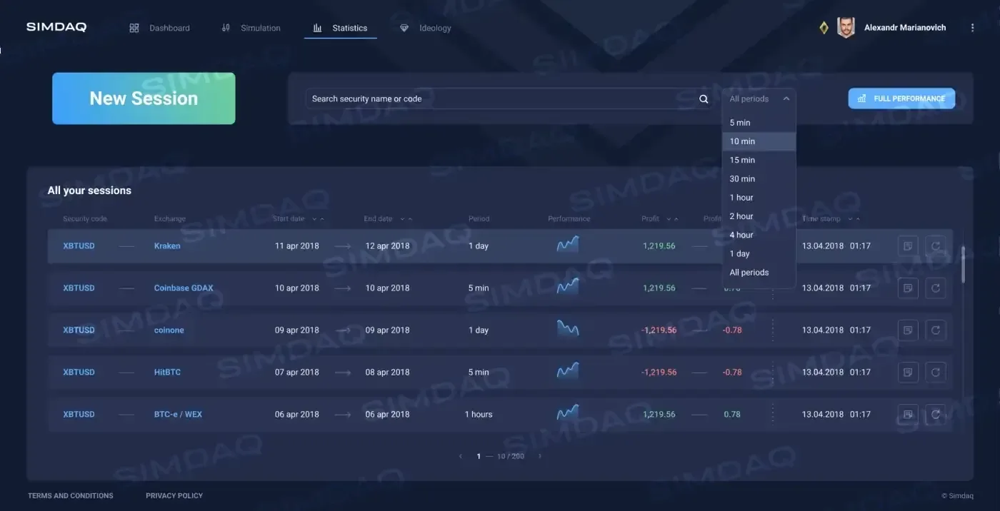
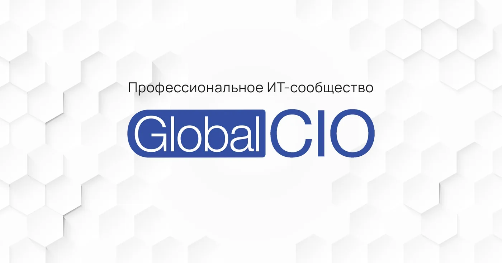
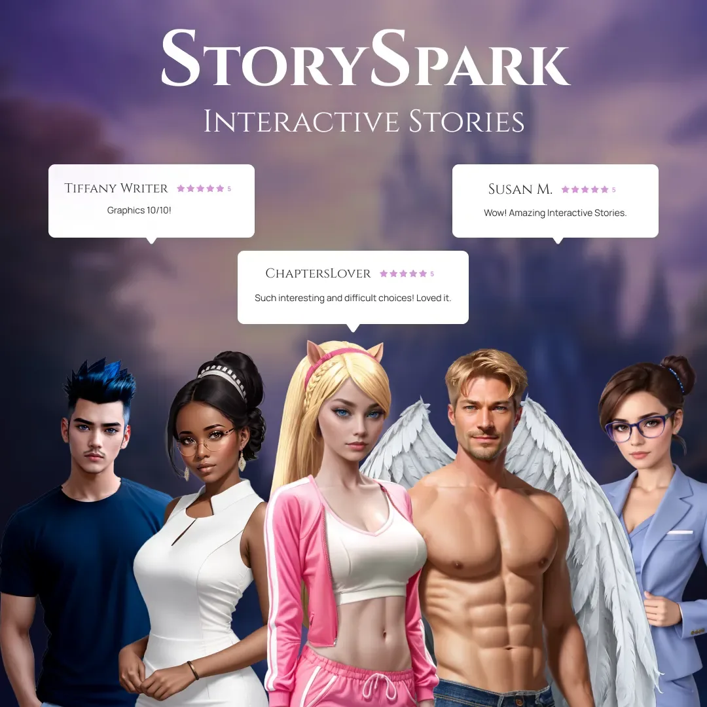
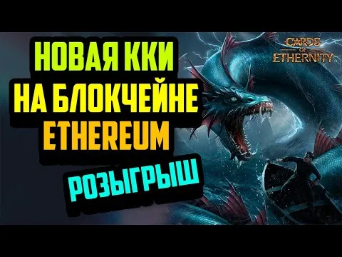

RB.RU
Интерактивная реклама: как продвигаются BBC, Mercedes-Benz и Discovery
Авторская публикация об интерактивной рекламе и примерах международных брендов.
Избранные статьи, интервью и публикации о моей работе в разработке продуктов, управлении проектами, технологиях, маркетинге и цифровой трансформации.
Здесь собраны мои публикации и материалы о продуктах и компаниях, над которыми я работал. Моя роль указана отдельно на странице каждого материала.
Материалов: 26 ↓Авторская публикация об интерактивной рекламе и примерах международных брендов.

Статья с комментарием Романа Мироничева об эмоциональном состоянии сотрудников, продуктивности и влиянии на бизнес.

Независимая публикация об инвестициях в SIMDAQ и программе инкубации Waves Lab.


Обзор симулятора торговли на исторических данных и концепции маркетплейса стратегий.
Официальная публикация проекта о механике маркетплейса и первом релизе.

Партнёрский материал об упрощении цифрового пути покупки жилья.

Публикация компании о дистанционной покупке квартиры и изменениях во время COVID-19.


Независимая публикация об онлайн-ипотеке.

Официальный источник о компании и её продуктах платёжной инфраструктуры.

Независимая публикация о концепции и запуске международного цифрового продукта.


Пресс-релиз о продукте и кампании привлечения финансирования.


Независимое интервью о продукте портфеля и его позиционировании.

Карточная игра Cards of Ethernity в каталоге Razer.

Официальная публикация компании о продукте StorySpark.

Видеопрезентация Berserk: The Cataclysm.

Документация Puzzle Royale: концепция игры и развитие продукта.


Практическая статья о командах, неопределённости, MVP и delivery в IT и игровой разработке.

Практическая статья о системе управления проектом и переходе от разрозненных задач к управляемому исполнению.

Авторская статья об оплате труда, отношении к команде и применении ИИ в проектной работе.

Обзор с комментарием Романа Мироничева об инструментах совместной работы, удалёнке и коммуникациях.
Нет материалов с такими фильтрами.